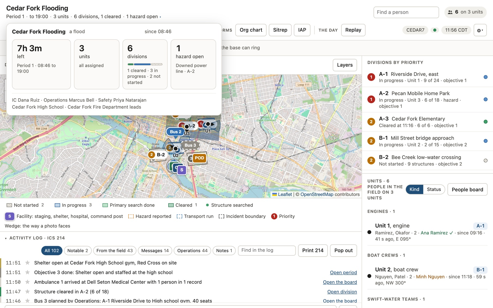
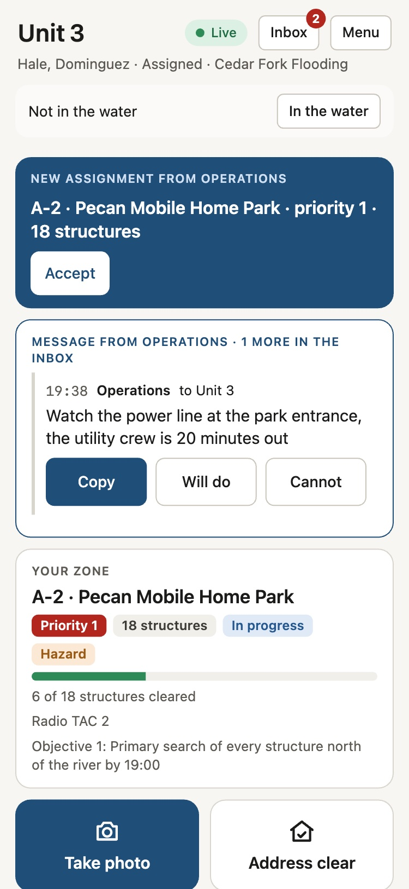
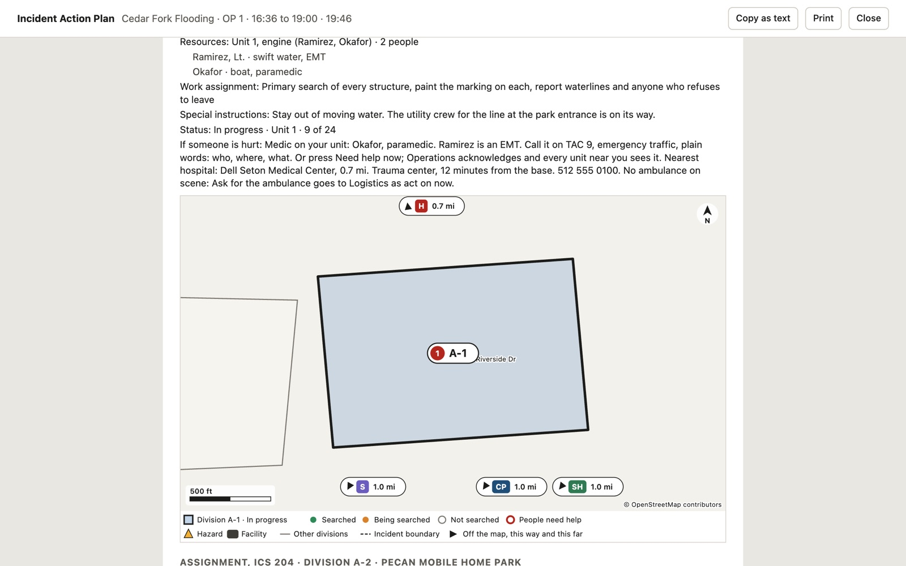
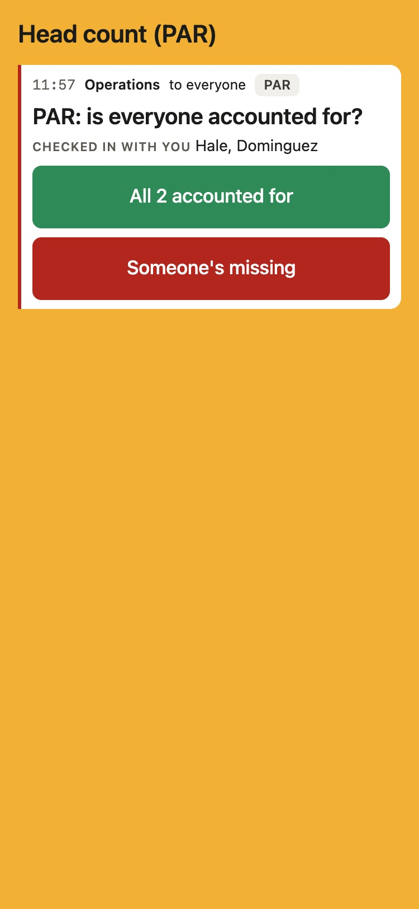
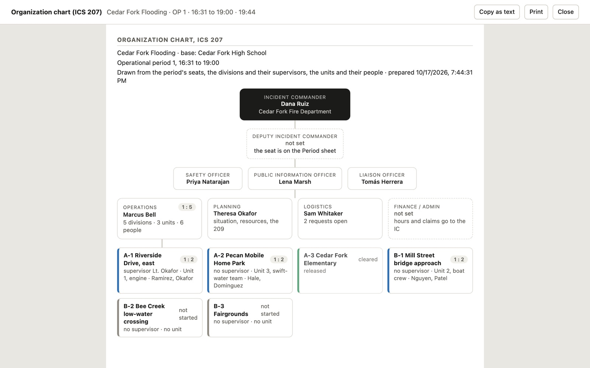

It is on your join card, on the screen at the base, or on another unit's phone. Type it here and the field app opens on this phone, ready to check you in.
No code? Ask whoever sent you, or the person running the base. Only the incident's Operations can add you.
A map at the base and an app on every phone, sharing one picture: where the units are, what they have cleared, who needs help, and the ICS forms written as it happens.


Draw the divisions, set their priorities, place the shelters and hospitals. The card carries a six-letter code and a QR.

A photo that knows which way it faced, an address cleared, a hazard, a head count answered by name. It all waits on the phone until there is signal.

The 214 line by line, the 211 with names, every 204 with its map, the 207, the 209 and the IAP, from what the crews sent.

Is anyone in trouble, how far has the search got, what is the plan: thirty seconds, then sign the IAP.
Try this role › Operations Section ChiefDraw a division, assign a crew, run a head count by name, answer the radio with the map in front of you.
Try this role › Unit lead on footClear an address in one tap, send a photo that knows which way you faced, answer the PAR without typing.
Try this role › Swift-water boat operatorA rotation clock for the water, the boat ramp on the map, and intake for the people you pull out.
Try this role › Shelter desk volunteerWho is on the next bus, who needs oxygen, and an answer for "is my mother here?"
Try this role › Mutual-aid captainJoin by scanning a code, get a 204 on paper with a map, and be released cleanly at the end.
Try this role ›Six more at Try it: the Safety Officer, the Documentation Unit, the Public Information Officer, a deputy at a closed bridge, the agency administrator, and the resident who refused to leave.
Hazards are resolved, alerts stood down, people archived. The database refuses deletes and writes the 214 itself.
A photo reaches the PIO only when Operations clears it and the PIO checks it. Names never leave the incident.
Every report waits on the phone and goes when there is signal. A dead spot never loses one.
Licences, dates of birth and addresses clear thirty days after the close, on a date Operations can see.
The code is on GitHub under the AGPL. Read it, run it, change it.
A pilot runs on your own incidents or a season: a briefing for the command staff and the crews, support during an incident, and an evaluation at the end. The first incident is a field afternoon with real phones, so nothing is new on the day it matters.
Get in touch on GitHubTry it as any role first, no account needed.
Loading…
Operations gives it by radio or phone; it is on the Operations home panel, never on the join card. The six-letter join code on the card joins field units only.